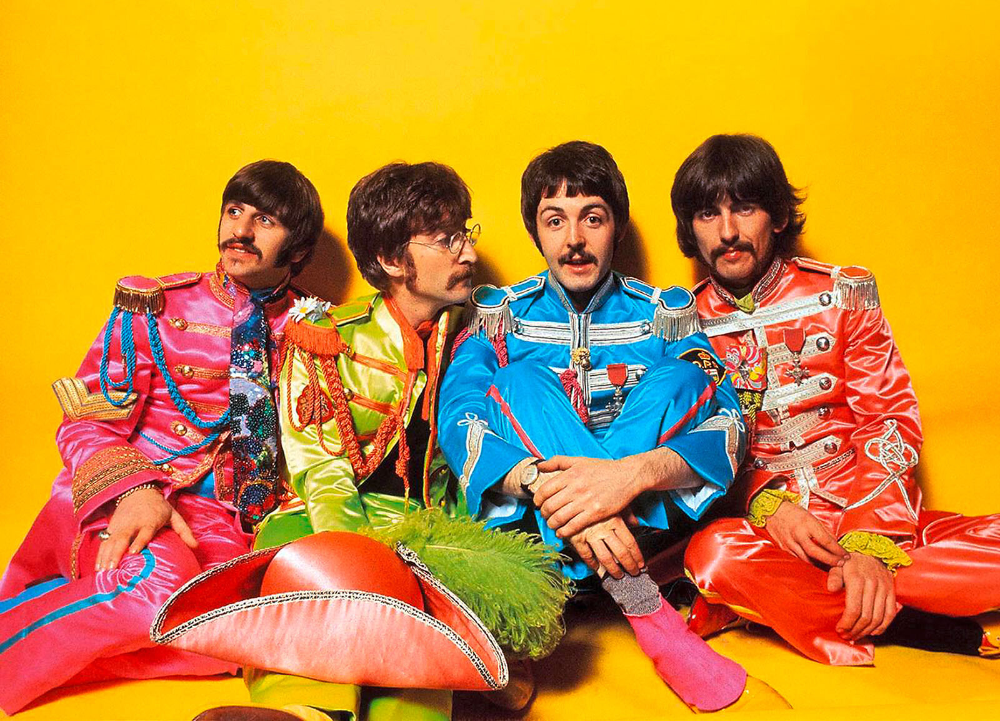
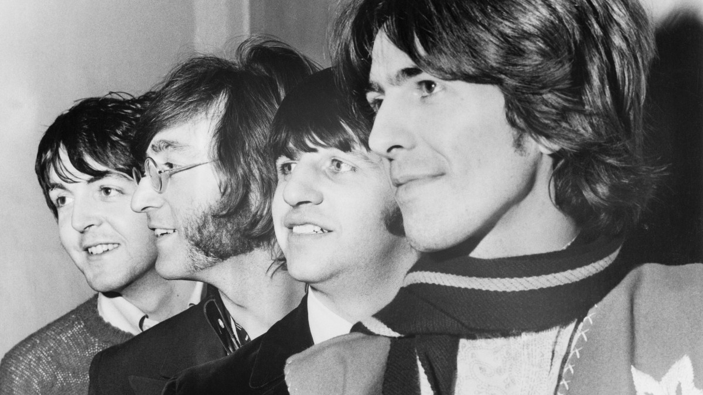
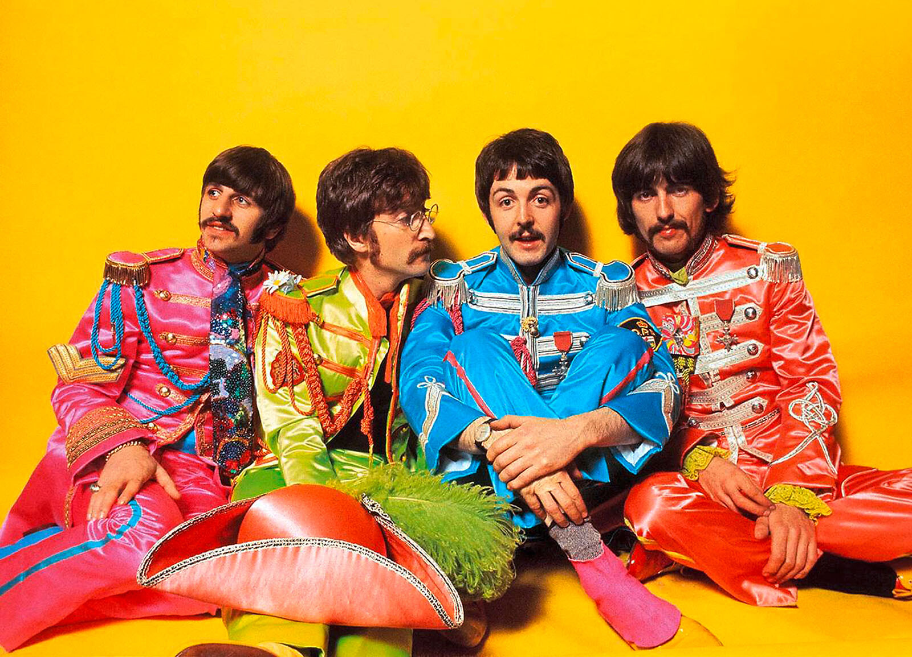
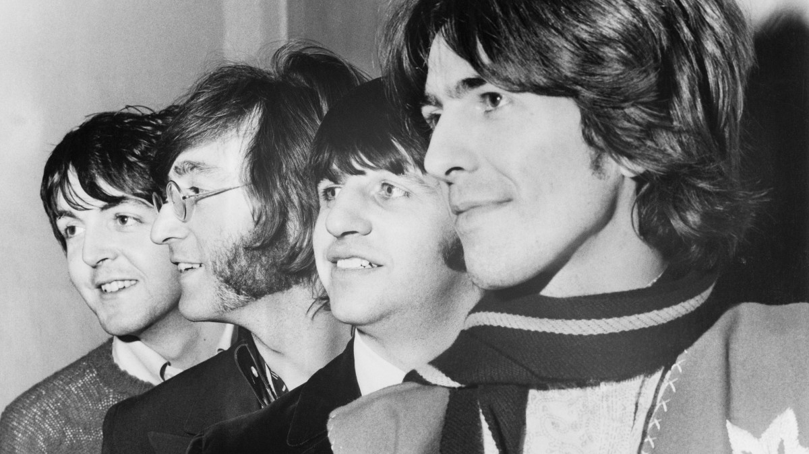

Saga - Bítlarnir
Bítlarnir voru áhrifamikil popphljómsveit sem var stofnuð 1960. Hljómsveitin er í hópi þeirra vinsælustu sem uppi hafa verið. Meðlimir sveitarinnar koma frá Liverpool í Englandi og á rætur sínar að rekja til hljómsveitarinnar The Quarry Men, sem var stofnuð af John Lennon árið 1956. Árið 1957 gekk Paul McCartney til liðs við hana, og árið 1958 George Harrison seinna ganga Stuart Sutcliffe og Pete Best til liðs við hana. Hljómsveitin gekk undir ýmsum nöfnum næstu árin, t.d. Johnny and the Moondogs, The Silver Beetles og vorið 1960 voru hljómsveitarmeðlimir farnir að kalla sig Bítlana (The Beatles).
Allt frá því að fyrsta platan kom út árið 1963 og þar til sú síðasta kom út árið 1970 samanstóð hljómsveitin af fjórum meðlimum, John Lennon, sem spilaði á gítar og söng, Paul McCartney, sem spilaði á bassa og söng, George Harrison, sem spilaði á gítar og söng stöku sinnum, og svo trommaranum Ringo Starr (Richard Starkey), sem einnig söng örfá lög. Langflest lögin voru samin af frægasta lagahöfunda tvíeyki sögunnar Lennon/McCartney. Síðastliðin ár hafa átt sér stað miklar deilur á milli Paul McCartney og Yoko Ono (síðari eiginkona John Lennon) vegna þess að Paul hefur viljað breyta skráningu laga sem hann samdi í McCartney/Lennon.
 



Gítar
Söngur og Gítar
Söngur og Bassi
Trommur
George Harrison
John Lennon
Paul McCartney
Ringo Starr
Lög eftir Bítlana
- "A Hard Day's Night" (1964, A Hard Day's Night)
- "A Day in the Life" (1967, Sgt. Pepper's Lonely Hearts Club Band)
- "Yesterday" (1965, Help!)
- "Strawberry Fields Forever" (1967, Magical Mystery Tour)
- "Something" (1969, Abbey Road)
- "She Loves You" (1963, Past Masters)
- "Let It Be" (1970, Let It Be)
- "Tomorrow Never Knows" (1966, Revolver)
- "Norwegian Wood (The Bird Has Flown)" (1965, Rubber Soul)
- "Across the Universe" (1969, Let It Be)